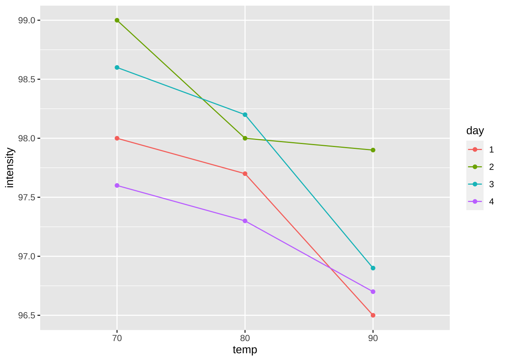
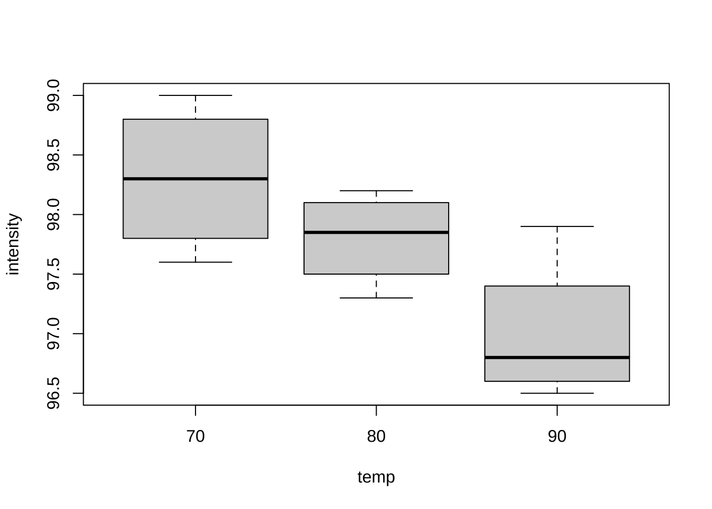

제 1 장 랜덤화 블럭설계
1.1 실험계획: 예제 5.1 -플라스틱 강도
플라스틱 제품의 강도를 측정하는 것이 실험의 목적이다. 랜덤하게 4일을 택해서 각 일마다 온도를 3개 수준으로 랜덤하게 변화시켜서 제품의 강도(intensity)를 측정하였다.
여기서 온도(temp)는 고정효과(\(\tau\))이며 선택된 일(day)는 블럭(\(\rho\))에 따른 효과이다.
\[ x_{ij} = \mu + \tau_i + \rho_j + e_{ij} \]
1.2 자료의 구성
이제 실험자료를 입력하여 데이터프레임으로 만들어 보자
intensity<- c(98.0, 97.7, 96.5,
99.0, 98.0, 97.9,
98.6, 98.2, 96.9,
97.6, 97.3, 96.7)
temp<- factor(rep(c(70, 80, 90), times=4))
day<- as.factor(rep(c(1:4), each=3))
df<- data.frame(intensity=intensity, temp=temp, day=day)
df## intensity temp day
## 1 98.0 70 1
## 2 97.7 80 1
## 3 96.5 90 1
## 4 99.0 70 2
## 5 98.0 80 2
## 6 97.9 90 2
## 7 98.6 70 3
## 8 98.2 80 3
## 9 96.9 90 3
## 10 97.6 70 4
## 11 97.3 80 4
## 12 96.7 90 4벡터를 범주형 변수로 만들어 줄때 두 함수 as.factor() 와 factor() 모두 사용 가능하다.
1.3 시각적 분석
이제 온도의 수준에 따른 변화를 볼 수 있는 그림을 그려보자. 온도가 올라가면 강도가 떨어지는 경향을 볼 수 있다.
df %>%
ggplot(aes(x = temp , y = intensity, color=day)) +
geom_line(aes(group = day)) + geom_point()
plot(intensity ~ temp, data=df)
이제 실험일에 따른 변동을 살펴보자. 실험일에 따라서 온도의 효과가 변하는 것을 볼 수 있다. 단 실험일과 온도의 상호작용은 크게 나타나지 않는다. 유의할 점은 반복이 없기 때문에 상호작용에 대한 추론은 불가능하다
df %>%
ggplot(aes(x = day , y = intensity, color=temp)) +
geom_line(aes(group = temp)) + geom_point()
1.4 분산분석
블럭 효과인 실험일(day)를 고정효과로 놓았을 경우 분산분석표는 다음과 같다.
\[ \rho_j : \text{ fixed effect,} \quad e_{ij} \sim N(0, \sigma_E^2) \]
model<- aov(intensity ~ temp + day, data=df)
summary(model)## Df Sum Sq Mean Sq F value Pr(>F)
## temp 2 3.44 1.720 18.43 0.0027 **
## day 3 2.22 0.740 7.93 0.0165 *
## Residuals 6 0.56 0.093
## ---
## Signif. codes: 0 '***' 0.001 '**' 0.01 '*' 0.05 '.' 0.1 ' ' 1위의 분산분석표에서 온도의 효과를 검정하는 F-통계량의 값은 18.4286 이고 p-값은 0.0027이다. 따라서 5% 유의수준으로 귀무가설을 기각하며 온도에 따라서 강도는 유의하게 다르다.
일반적으로 블럭효과에 대해서는 검정하지 않지만 그래도 p-값이 0.0165 로서 매우 작으므로 실험일에 따른 변동이 크다는 것을 알 수 있다. 이는 실험울 수행하는 날에 따라서 관측값에 변동이 크다는 것이다. 단 상호작용이 그림으로 볼 때 나타나지 않기 때문에 온도의 효과는 적절하게 추정할 수 있다.
1.5 혼합모형
고정효과와 임의효과(변량)가 동시에 모형식에 나타나는 모형을 혼합모형(mixed models)이라고 부른다.
혼합모형을 적합시키는 패키지는
lme4이며 모형을 적합시키는 함수는lmer이다.혼합모형으로 부터 얻은 분산분석표에서 p-값을 보려면 패키지
lmerTest를 사용해야 한다.함수
lmer에서 고정효과에 대한 모형식은 함수anova와 같다.함수
lmer에서 만약 변수var을 임의효과로 고려하려면(1|var)으로 쓰면 된다.
다음은 플라스틱 강도 자료 실험에서 블럭 효과인 실험일(day, \(\rho\))를 임의효과로 놓았을 경우 분석결과이다. 즉
\[ \rho_j \sim N(0, \sigma_B^2), \quad e_{ij} \sim N(0, \sigma_E^2) \]
fit <- lmer(intensity ~ temp + (1|day), data=df)
summary(fit)## Linear mixed model fit by REML. t-tests use Satterthwaite's method [
## lmerModLmerTest]
## Formula: intensity ~ temp + (1 | day)
## Data: df
##
## REML criterion at convergence: 14.6
##
## Scaled residuals:
## Min 1Q Median 3Q Max
## -1.062 -0.799 0.143 0.542 1.230
##
## Random effects:
## Groups Name Variance Std.Dev.
## day (Intercept) 0.2156 0.464
## Residual 0.0933 0.306
## Number of obs: 12, groups: day, 4
##
## Fixed effects:
## Estimate Std. Error df t value Pr(>|t|)
## (Intercept) 98.300 0.278 4.559 353.74 2.7e-11 ***
## temp80 -0.500 0.216 6.000 -2.31 0.05989 .
## temp90 -1.300 0.216 6.000 -6.02 0.00095 ***
## ---
## Signif. codes: 0 '***' 0.001 '**' 0.01 '*' 0.05 '.' 0.1 ' ' 1
##
## Correlation of Fixed Effects:
## (Intr) temp80
## temp80 -0.389
## temp90 -0.389 0.500위의 결과에서 블럭효과(day) 를 나타내는 분산 성분 \(\sigma_B^2\)의 추정치는 0.2156 이며 오차항(Residual)의 분산 \(\sigma_E^2\)의 추정치는 0.0933 이다. 이는 급내상관 계수(ICC)는 0.6978 로서 매우 크다는 것을 의미한다.
\[ ICC = \frac{\sigma_B^2}{\sigma_B^2 + \sigma_E^2} = 0.6978 \]
다음은 플라스틱 강도 자료 실험에서 블럭 효과를 임의효과로 놓았을 경우 분산분석표이다.
함수 lmer 에 의해 생성된 결과를 함수 anova에 적용하면 고정효과에 대한 분산분석과 F-검정만 보여준다. 앞에서 블럭을 고정효과로 놓았을 때 분산분석의 검정 결과와 같다.
anova(fit)## Type III Analysis of Variance Table with Satterthwaite's method
## Sum Sq Mean Sq NumDF DenDF F value Pr(>F)
## temp 3.44 1.72 2 6 18.4 0.0027 **
## ---
## Signif. codes: 0 '***' 0.001 '**' 0.01 '*' 0.05 '.' 0.1 ' ' 1